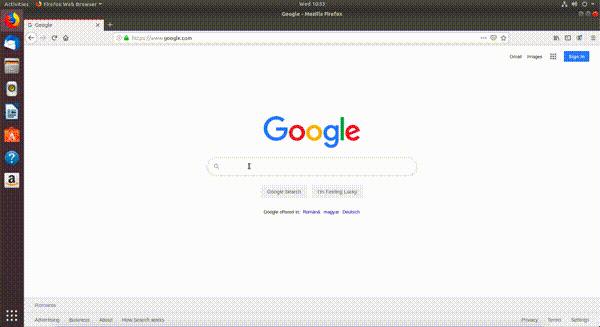

Atunci când navigăm pe Internet, găsim foarte multe informații utile, dar și foarte multe reclame.
Recomandăm instalarea unui ad blocker[1] pentru a filtra reclamele care apar pe paginile web pe care le deschidem.
În această subsecțiune vom instala ad blockerul AdBlock Plus care vine sub forma unui plug-in (o extensie) pentru browerul web, care elimină (pe cât posibil) reclamele de pe paginile web pe care le deschidem.
Pentru a instala ad blockerul AdBlock Plus urmăm pașii enumerați mai jos, prezenți și în GIF. Acești pași se aplică pentru browserul Mozilla Firefox.
Atunci când navigăm pe Internet putem să găsim, voluntar sau nu, pagini interesante pe care vrem să le revizităm cândva în viitor.
Ca să nu pierdem aceste pagini, folosim bookmarkuri.
În această sub-subsecțiune vom adăuga bookmarkuri noi pentru rețetele cele mai bune de prăjituri găsite pe Internet.
Deschidem din nou browserul Firefox, accesăm pagina www.google.com și căutăm Best cake recipes ca în imaginea de mai jos:

Putem să adăugăm un nou bookmark în mai multe moduri:
Folosind meniul din dreapta sus al browserului ca în imaginea de mai jos: